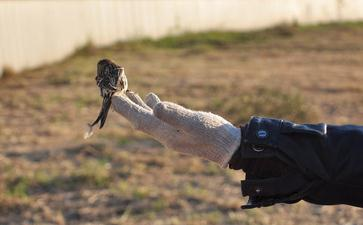

我
但是我没有退路,不修行活着更没个指望,跟着这个世俗堕落,更没意思,于是又慢慢开始清醒,就想为什么有些师兄,即便人家得了癌症都那么坚定,从不怀疑,而我就不能呢?同样是修为什么人家就不轻易放弃,咬紧牙关越是逆境,越不退呢? 我渐渐明白是我善根福德太浅,所以不能深信不疑,遇到困难就退转,也难怪不能受益,于是又爬起来求佛菩萨加持无论如何要加持我修行下去,我也
有时每次护完后都发愿求佛菩萨加持,愿借此小小功德能生成一种力量,让我修行下去不要退转,我也开始了放生,每次和我的一个师兄放完生后就感到很
也不知道从什么时候起,我渐渐懂得了在逆境中懂得了忏悔,越是不顺,越代表我累世伤害别人越重,越要努力培福,精进修行,我所有的不顺,都是过去伤害别的 众生得到的
因为意识到自己福薄,善根很浅,所以我开始求佛菩萨加持省吃俭用,把生活降到最低,这样把我所有的福报都拿去放生布施 ,不求别的,就求逆境不退转,求好好忏悔,我以前住的地方没有厨房,都买着吃,又不卫生,又很贵,现在有厨房了我就开始打算在这上面省,说实在话也是自己太不争气,根性太烂了,必须得这样,我买菜开始什么便宜买什么,人家检大的买,我就检小的买,人家检新鲜的买,我就检不太新鲜的买,(当然是那种不至于伤害身体的菜)便宜啊,可以省很多钱啊,我可以拿去放生、布施,这些都是我修行下去的力量。
这是我一周的消费情况:
星期一: 土豆片
星期二:
星期三: 洋
星期四: 白菜
星期五:
星期六: 有时吃点绿叶菜之类的,
星期天: 改善一次炒几个菜有时和朋友一起吃,差不多一周吃饭才吃掉( 35元--45元一周)个别时候和朋友出去吃个饭除外 ,我说的是大概 呵呵,说实在话这些钱以前不够我买零食的呢,一个炒冷面啊,一个烤
有人要说了,至于吗? 哎,我们这批80后,没吃过苦,一般花钱随便,即便修行了也是想吃什么就买什么,有些认为能吃素已经不错了,干嘛这么抠门呢? 其实那是大家真的没意识到自己善根福德太薄,如果真意识到了,你还敢拿着养你法身慧命的福报去浪费一分一毫吗?还有我们其实每一念都先想到自己,不吃点好的馋,吃点好的就少救好多生命,对我们来说不过是贪个口欲之福,对人家来说是生命啊,(10元可以买两条生命不被杀,不被下油锅,多值啊) 10 元可以让一个快饿死的人救过来, 借此功德也可以挽救我们这颗堕落的心不再堕落,让我们这颗麻木不仁,不懂忏悔的心,渐渐懂得精进修行,努力忏悔。
基本上我一个菜吃三顿,算下来才合上每餐2元,一个月算下来我就至少省下600--700 (我的意思如果按自己以前的标准比) 有人要说了,至于吗? 哎,我们这批80后,没吃过苦,一般花钱随便,即便修行了也是想吃什么就买什么,有些认为能吃素已经不错了,干嘛这么抠门呢? 其实那是大家真的没意识到自己善根福德太薄,如果真意识到了,你还敢拿着养你法身慧命的福报去浪费一分一毫吗?
还有我们其实每一念都先想到自己,不吃点好的馋,吃点好的就少救好多生命,对我们来说不过是贪个口欲之福,对人家来说是生命啊。 (10元可以买两条生命不被杀,不被下油锅,多值啊) 10 元可以让一个快饿死的人救过来, 借此功德也可以挽救我们这颗堕落的心不再堕落,让我们这颗麻木不仁,不懂忏悔的心,渐渐懂得精进修行,努力忏悔。
我在穿衣方面必要的就买,不必要的就不买了,我觉得不要影响工作的正常的社交之外都是可以尽量节俭的,我住的房子两室一厅,我住客厅里(三个女生合租的)便宜啊,一个月便宜两三百呢,把我们有限的福报布施出去,去救更多的生命或帮更多比我们更益,我们每次放生,都会事先了解什么样的动物需要怎样的生活条件,都请佛菩萨加持我们尽量找到最适合他们的生活环境,每次放完生闭上眼睛 愿佛菩萨加持他们早日脱离三恶道,早日修行成就,最后愿我放生的功德可以形成一种力量让我能够听佛菩萨教导,得正知见,能够勇猛精进,逆境不退, 阿弥陀佛。